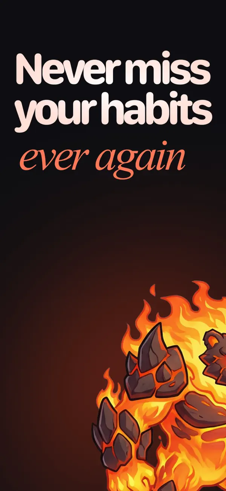
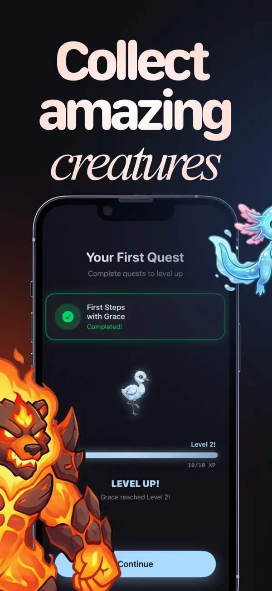
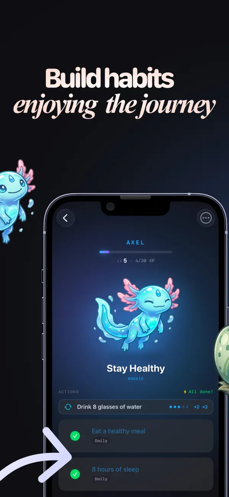
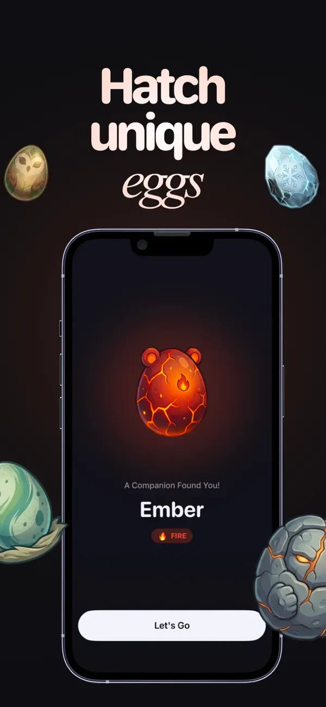
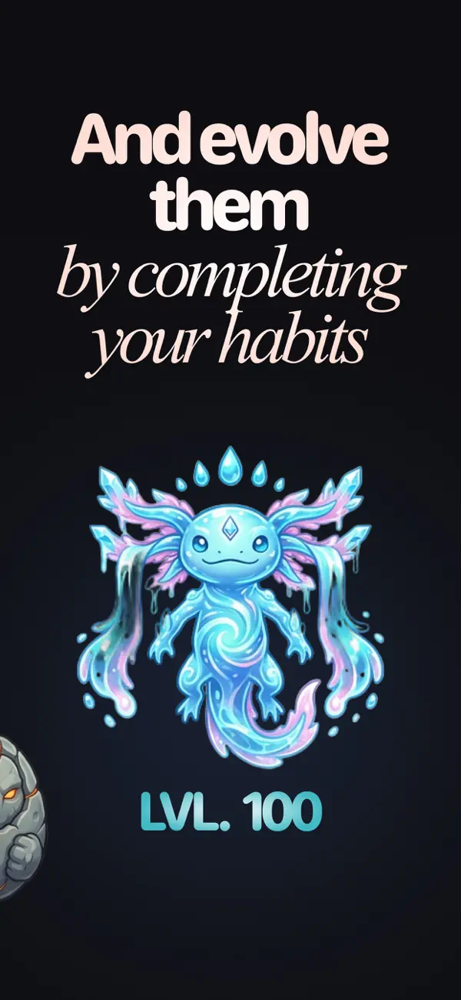
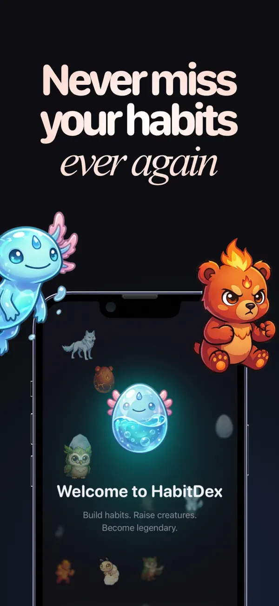

HabitDex
Habits that feel like a game — not another guilt checklist.
HabitDex is an iPhone habit tracker built around a light creature-collection loop: you log days, earn XP, protect streaks, and unlock / evolve companions so consistency feels tangible. Your history lives on the device first; iCloud via CloudKit is optional when you want the same data across devices.
We built it together with Miguel (LinkedIn) — he owned product design, UI, UX, and branding end to end; I focused on iOS engineering, data, and shipping to the App Store.
Links
- Miguel (design): LinkedIn
- App Store: HabitDex (iPhone)
- Product site: v0-habitdex.vercel.app
- Policies: Privacy · Terms
What’s in the app
- Daily habits & streaks — Fast logging and streak feedback that rewards showing up, not perfect weeks.
- Creatures & progression — Collect and evolve companions as you stay consistent; the fantasy supports the habit, not the other way around.
- Stats you can read at a glance — Progress and patterns stay visible so today’s progress is obvious without digging.
- Privacy-first by default — Core data stays local; cloud sync is opt-in.
- HabitDex PRO — Optional in-app purchases / subscription for deeper features, wired through Apple and RevenueCat; the free tier stays a real product, not a demo wall.
How it was built
On my side I treated it as an end-to-end iOS product in SwiftUI: flows wired to Miguel’s design, persistence aligned with Apple’s on-device model and CloudKit when sync is enabled — so there is no unrelated server holding your habits by default. Monetization uses StoreKit with RevenueCat so entitlements, experiments, and paywalls do not turn into bespoke plumbing.
Shipping meant real App Store work — metadata, privacy nutrition labels, review feedback, device testing — then iteration from usage: tightening first-run clarity, balancing the reward loop so creatures stay motivating without obscuring the actual habit, and keeping performance snappy on older phones.
Free to download; HabitDex PRO funds continued development.
App Store gallery
Screens below are from the live listing: home and today’s habits → collection → habit detail → stats → settings → PRO.





